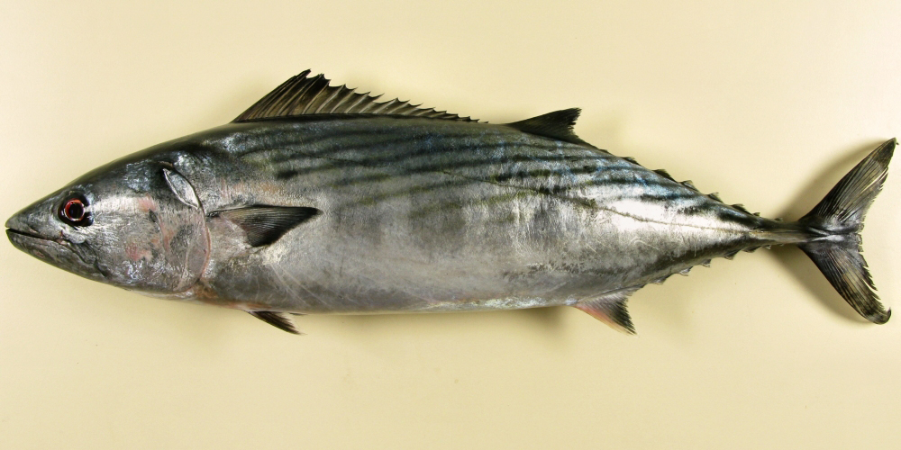

Sarda sarda (Παλαμίδα)

Η παλαμίδα (Sarda sarda) είναι πελαγικό, γρήγορο ψάρι της οικογένειας των τονοειδών, με σημαντικό ρόλο στα μεσογειακά οικοσυστήματα και στην αλιεία
Μορφολογία
Η παλαμίδα έχει υδροδυναμικό, ραβδωτό σώμα με έντονα αναπτυγμένη ουρά και πτερύγια προσαρμοσμένα σε συνεχή κολύμβηση σε κοπάδια. Το μήκος της φτάνει συνήθως 30–70 cm, αλλά μπορεί να ξεπεράσει τα 90 cm, με σώμα στιβαρό και γραμμές/λωρίδες στη ράχη που τη διακρίνουν από άλλα τονοειδή
Πού τη συναντάμε
Είναι ευρύαλο είδος που απαντάται στον Ατλαντικό, τη Μεσόγειο και τη Μαύρη Θάλασσα, όπου κινείται κυρίως σε παράκτιες αλλά και ανοιχτές πελαγικές ζώνες. Στη Μεσόγειο, περιλαμβανομένων των ελληνικών θαλασσών, προτιμά επιφανειακά έως μεσόνερα βάθη μέχρι περίπου 200 m, με θερμοκρασίες περίπου 12–27 °C και μεγάλη ικανότητα προσαρμογής σε διαφορετικές αλατότητες.
Διατροφή
Η παλαμίδα είναι καθαρά ιχθυοφάγος θηρευτής: η διατροφή της αποτελείται κυρίως από μικρά πελαγικά ψάρια όπως γαύροι (Engraulis encrasicolus), σαρδέλες (Sardina pilchardus) και άλλα κοπαδιάρικα είδη, ενώ συμπληρωματικά καταναλώνει καρκινοειδή και κεφαλόποδα. Η σύνθεση της τροφής της μεταβάλλεται εποχικά και με το μέγεθος του ψαριού, αλλά τα ψάρια παραμένουν η κυρίαρχη ομάδα λείας σε όλες τις μελέτες.
Συνθήκες εκτροφής
Για εκτροφή ή μακροχρόνια διατήρηση σε αιχμαλωσία, η παλαμίδα απαιτεί μεγάλες, κυκλικές ή οβάλ δεξαμενές με ισχυρή, συνεχόμενη ροή νερού ώστε να μπορεί να κολυμπά διαρκώς και να μειώνεται το στρες, όπως δείχνουν πειραματικές εκτροφές σε συγγενικά είδη Sarda. Τα καλύτερα αποτελέσματα προκύπτουν όταν διατηρούνται σταθερές συνθήκες καλής οξυγόνωσης, καθαρότητας νερού και κατάλληλης θερμοκρασίας μέσα στο εύρος που αντέχει είδος (περίπου 18–24 °C για μεσογειακά αποθέματα), ενώ ο χειρισμός των ψαριών πρέπει να είναι όσο το δυνατόν πιο ήπιος λόγω ευαισθησίας στο στρες και στις κακώσεις.
Εκτροφή και αναπαραγωγή
Προγράμματα έρευνας δείχνουν ότι η παλαμίδα και συγγενικά είδη μπορούν να φτάσουν σε φυσική ωρίμανση και να αποδώσουν γονείς, αυγά και προνύμφες σε συστήματα ανακυκλοφορίας, εφόσον εξασφαλιστούν σωστά μεγέθη δεξαμενών, ποιοτική τροφή και σταθερές περιβαλλοντικές παράμετροι. Αυτές οι μελέτες προτείνουν ότι η παλαμίδα έχει προοπτική για μελλοντική εκτροφή, αλλά ακόμη βρίσκεται κυρίως στο στάδιο πειραματικής έρευνας και όχι εμπορικής ιχθυοκαλλιέργειας.